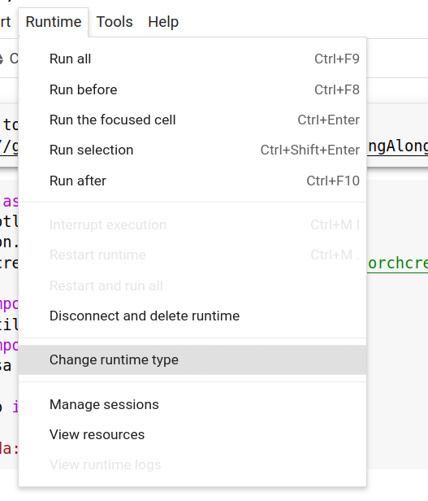
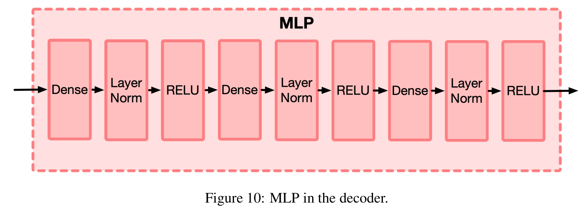
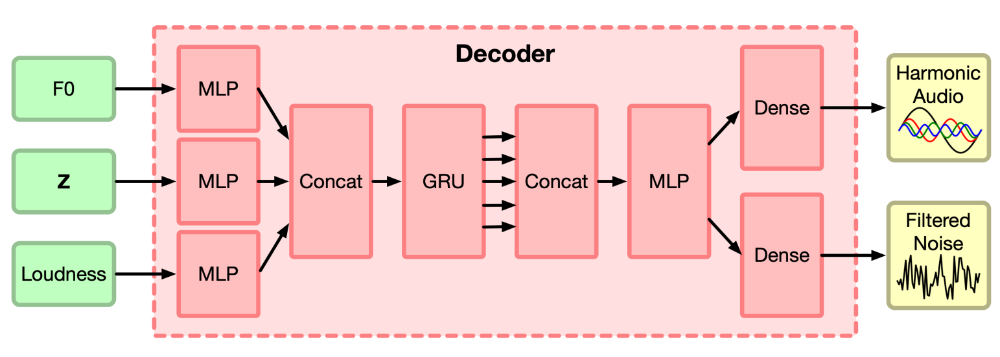
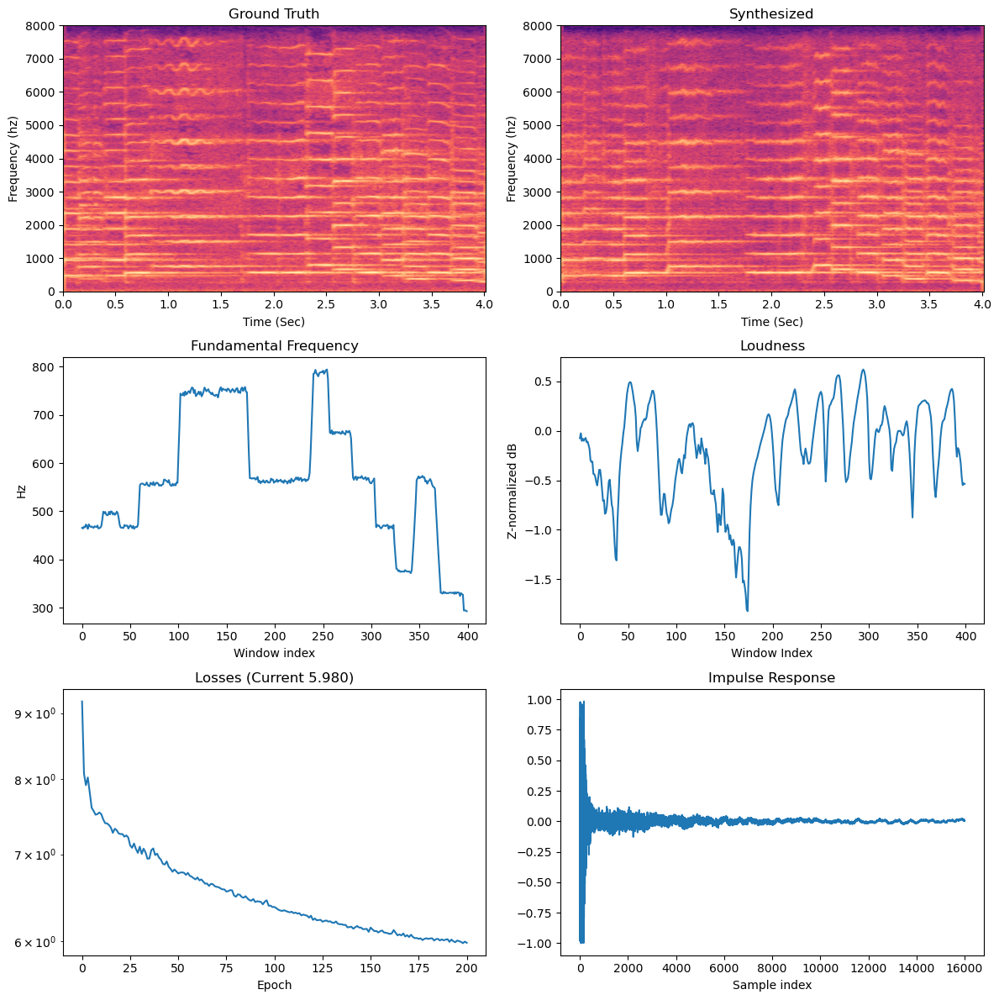
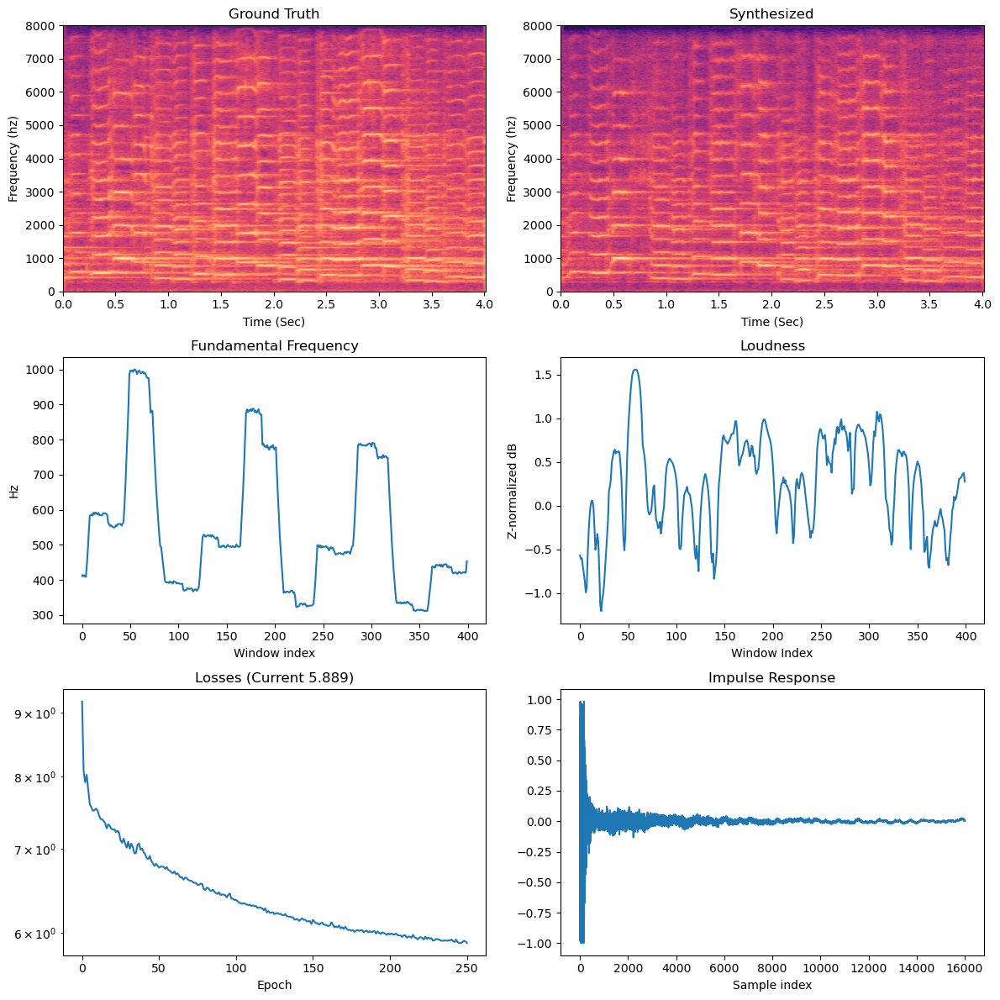

Assignment 6: String Along (65 Points)
Chris Tralie
Click here to listen to musical statements
Background
We have reached the grand finale of the course! For this, you will implement a fusion of new and old techniques known as Differentiable Digital Signal Processing to learn how to synthesize monophonic (single instrument) music sounds from example audio. By using pre-defined things we learned in other parts of the course (spectrograms, loudness computation, pitch tracking, instantaneous frequency generation), we will be able to significantly reduce the data and training requirements of this pipeline. All in all, we'll be able to create a reasonable bowed violin synth with only 13 minutes of training data and about 2-3 hours of training. By contrast, wavenet, another popular neural network-based audio synthesis technique, may require tens or hundreds of hours of training data and several days of training.
Perhaps most excitingly of all, we will be to do cross-synthesis/vocoder, in which we use the loudness and pitch of a completely different instrument to drive the decoder. Among other things, this allows us to turn singing voice into a violin. For example, suppose we start with the following clip from Adele:
We can then turn her into a violin as follows (note that I've moved the encoded pitch up by one octave):
For yet another example, here is a clip from Marvin Gaye:
And here is what he sounds like as a violin
As a side benefit, since this model includes a learnable reverberation impulse response, we can hear what it would sound like if we clapped in the room in which the training audio was recorded, as shown below:
By the end of this assignment, you will be able to replicate these examples and go further with your own!
Learning Goals/Objectives
- Goal 1: Implement a full pipeline for supervised learning including data curation, model definition, loss function specification, and training loop
- Goal 2: Explore the integration of classical domain knowledge (spectrograms, windowing, impulse responses, instantaneous frequency, loudness, subtractive/additive synthesis) with modern machine learning techniques (deep neural networks)
- Objective 1: Practice tensor-wise operations in pytorch
- Objective 2: Practice training neural networks
- Objective 3: Compose music in a cutting edge style
What To Submit
When you are finished, submit the notebook you created to canvas, and the following audio clips:
- An example of a 4 second clip from the training data encoded and decoded with your fully trained network
- The provided examples (Adele, Marvin Gaye) encoded and decoded with your fully trained network
- Your musical statement
Programming Tasks
Starter Code
The starter notebook for this can be obtained at https://github.com/ursinus-cs372-s2023/HW6_StringAlong. You'll want to load this into Google Colab. Be sure to change your runtime to GPU:
This is crucial for the training to run at a reasonable pace. It also means that you'll have to move your model and all of the tensors over the GPU before using them. Here are a few examples of how to do this:
DDSP Paper
Click here to access the paper on DDSP. I will do my best to explain what needs to be done as we go along, but it may be helpful to have this as a reference. You can also see Google's press release / landing page here. We will be implementing the "supervised encoder" and decoder in this assignment. We'll encode using torchcrepe for pitch and a frequency-based method for loudness, and then we'll implement a decoder with additive synthesis, subtractive synthesis, and reverb.
What Now?
In what follows, you will walk through the steps for supervised learning that I outlined in module 20 in this context:
- Gather data
- Define a model (the encoder and decoder) to fix the space of possible functions to transform an input to an output
- Devise a scoring function for how well your learned model fits the data
Then, you will implement a training loop to put it all together, using backpropagation on the loss function to tweak the model's parameters until it fits the data we have.
Part 1: Data Loader (10 Points)
The first step is to gather training data and put it into a torch Dataset so that it's convenient to collate into batches in a training loop. This is also where we will perform the encoding steps of loudness and pitch for raw audio.
In this assignment, we'll be creating a violin model using the same setup that the original paper used; namely, 5 Bach violin partitas (II. Double, III. Corrente, IV. Double Presto, VI. Double, VIII. Double), as performed by John Garner. I have concatenated them together into a 16khz mono clip data.wav. You can load this as follows
Your Task
Create a Dataset object called InstrumentData. Do the following pre-computations in the constructor:
- Pass along an audio clip
x, a sample ratesr, ahop_length, and a parametersamples_per_batchto the constructor and store them away as member variables (e.g.self.x = x). Thesamples_per_batchcan be treated as a length, and a good default value for the violin data is 5000. -
Extract the loudness of
xusing the providedextract_loudnessmethod. Compute its mean and standard deviation and save them as member variables. Then, subtract off the mean and divide by the standard deviation, and store the resulting normalized loudness array as a member variable. -
Extract the fundamental frequency estimation using
torchcrepe(this is installed and imported in the first cell of the notebook), and save it as a member variable. -
Crop the
pitchandloudnessarrays down to have the minimum number of samples between the two. Crop the audio down so that it has this number of samples times thehop_length
Then, in the __getitem__ method, extract a random 4 second clip from the dataset, and reshape it so that it's a column vector in torch; e.g.
Then, slice out the corresponding sections of pitch and loudness and reshape them to be column vectors, and return the three from the dataset.
Before you proceed to the next step, construct the dataset using a hop_Length of 160, pull out a few elements, and make sure they look right.
Tips
- You may want to review the class notes on datasets in torch
- I've provided an example data loader in the code that creates random FM plucked strings as an example to help with debugging. This is yet another example you can reference.
Part 2a: Decoder Architecture (15 Points)
In this section, you will create the decoder architecture, as described in section B.2 of the DDSP paper
Your Task
MLP (5 points)

First, create an MLP class for a "multilayer perceptron" that inherits from nn.module. As shown in Figure 10 of the DDSP paper, this consists of the following sequence, repeated three times:
- nn.Linear
- nn.LayerNorm
- nn.LeakyReLU (this tends to work a bit better than the plain ReLU they originally suggested)
Have one parameter to the constructor for the initial input size into the first linear input layer, and another parameter for the output size of the first linear layer. This is the input/output size used for all other layers, which we can refer to as the "hidden dimension."
It's a good idea to store these layers as a member variable with the layers wrapped into a nn.Sequential.
Before you proceed, make sure that you can send in a tensor of the appropriate shape and it comes back with the right shape, according to your size parameters.
Decoder (10 Points)

Create a class DDSPDecoder that inherits from nn.module, and which has the following parameters to the constructor:
-
n_units: The number of units in each multilayer perceptron -
sr: The same rate -
n_harmonics: The number of harmonic amplitudes to output to use in the additive synthesizer -
n_bands: The number of bands to use in the noise filter for subtractive synthesis -
reverb_len: The length of the reverberation impulse response, in samples
The last three parameters will be related to the parts of the decoder that control the additive synthesizer, the subtractive synthesis, and the reverberation, respectively.
Based on all of these parameters, construct the following layers and store them as member variables (this may look daunting, but it's basically just following through each line by line);
- An MLP layer that takes 1 channel input and uses
n_unitsunits in the hidden layers, which will be used as the first module to encode pitch - Another MLP layer that takes 1 channel input and uses
n_unitsunits in the hidden layers, which will be used as the first module to encode loudness -
A gated recurrent unit (
nn.GRU) with aninput_sizeofn_units*2, ahidden_sizeofn_units, andbatch_first=True - Another MLP layer that takes
3*n_unitschannel inputs and usesn_unitsunits in the hidden layers, which will be used to jointly transform the outputs of the first two MLPs and the GRU's output -
Harmonics decoder: A Linear layer with
n_unitsinputs andn_harmonicsoutputs, which will be used to create the distribution of harmonics for the notes in the additive synthesizer -
Amplitude decoder: A Linear layer with
n_unitsinputs and a single output, which will be used to create the overall amplitude of the notes in the additive synthesizer -
Subtractive filter decoder: A Linear layer with
n_unitsinputs andn_bandsoutputs, which will be used to create the frequency domain transfer function for the subtractive synthesizer - A set of learnable parameters for the impulse response of the reverb, which you can initialize as this is not a "layer" per se, but each element of the impulse response is treated as a parameter that can be updated during training
Once you have all of these layers, implement the forward method to take in a tensor of pitches F and a tensor of loudness values L, and flow them through the network as follows:
-
Send
Fthrough the first MLP -
Send
Lthrough the second MLP - Concatenate the outputs of the above two MLPs along axis 2, and pass them through the GRU
-
Concatenate the outputs of the
FandLMLP with the output of the GRU, and send them through the third MLP.NOTE: The output of the GRU is actually a tuple, and you only want the first element; that is, say something like:
-
Send the output of the last step through the harmonics, amplitude, and subtractive filter decoders to get tensors
C,A, andS, respectively. -
Send
C,A, andSthrough amodified_sigmoid, which is described in the paper section 3.2, and which I've provided for you. This keeps the outputs nonnegative, which is important - Normalize the harmonics to sum to 1 (this is not a detail they mentioned in the paper, but it can help with training)
-
Finally, send the current reverb parameters through a hyperbolic tangent (
torch.tanh), and returnA,C,S, and the transformed reverb from theforwardmethod
Extra Credit (+2)
Based on the input frequency, zero out the elements in the harmonics tensor C that are above the Nyquist rate (sr/2) to avoid aliasing during training, right before you normalize in step 7. This will also help the training to go better, particularly if you decide to use 100 harmonics instead of 50, which will capture the lower notes better.
Tip #1: Shapes
Before you go any further, you should make sure all of your shapes are working out in the network. You can make a DataLoader to collate some input data together and send them through an example network
At this point, assuming 4 seconds of audio at a 16000hz sample rate with a hop_length of 160:
-
Xis a16x64000x1tensor holding the audio samples for 16 clips -
Fis a16x400x1tensor holding the pitch estimates for the corresponding clips (100 per second at a hop length of 160) -
Lis a16x400x1tensor holding the loudness estimates for the corresponding clips
From here forward, all of the tensors we will be dealing with will be 3D, with the first dimension indicating the batch (this is why we had to say batch_first=True for the GRU), the second dimension indicating the time axis, and the third dimension indicating the channel.
If we send the bach frequency and loudness inputs through a decoder object
then we should see that A is 16 x 400 x 1, C is 16 x 400 x n_harmonics, S is 16 x 400 x n_bands, and reverb is a flat array of reverb_len samples
Tip #2: Trainable Parameters
One common bug is to not have all of the parameters registered with the class. Before you proceed, throw this method into your DDSPDecoder class:
If you have n_units=512, n_harmonics=100, n_bands=65, reverb_len=sr, then your network should have 4837670 parameters with the above setup.
Part 2b: Synthesizer (10 Points)
Now the we have the learnable "AI" part of the model, it's time to setup the fixed part of the decoder that uses DSP elements.
Your Task
Create a method synthesize that takes in the pitches F and the outputs from the neural network C, A, S, and reverb, and which creates audio waveforms using these parameters. This process is as follows:
-
Upsample
C,A, andFto audio sample rate using theupsample_timemethod I provided. -
Use
C,A, andFto create a set of harmonics at the appropriate amplitudes, and sum the harmonics together for the additive synthesis audio components. You should do this completely without loops using methods liketorch.cumsum,torch.sum,torch.arange, andview. Otherwise, the backpropagation in the training will be very slow later. -
Perform subtractive synthesis by sending along
Sand thehop_lengthto thesubtractive_synthesismethod I provided -
Sum together the additive and subtractive synthesis components, and apply the impulse response with a fast convolution using the
fftconvolvemethod I provided. Here, it's convenient to get rid of the singleton dimension at the end ofYby passing alongY.squeeze()to the method. You will also want to reshape the reverb to be 1xtime.
Tips
The shapes are tricky here. Be sure to test it with example batches and network outputs before you move on, even if they're noisy. In particular, make sure you know how to listen to audio that's outputted from this method
Part 3: Loss Function (8 Points)
We have to create a unique loss function called the multi-scale spectral loss (MSS), which is described in section 4.2.1 of the DDSP paper. Rather than using something off the shelf like logistic loss or cross-entropy loss, we're instead going to sum up the absolute differences between the spectrograms of X and the spectrograms of Y at different scales. According to the paper, this captures our perception of similarity well, while not being sensitive to phase offsets, which we are not sensitive to.
Your Task
Create a method mss_loss which takes in the ground truth audio X and the reconstructed audio Y, and which computes the following sum:
- For each STFT window length in [64, 128, 256, 512, 1024, 2048], compute the absolute value of the STFT (
torch.abs(torch.stft(..., return_complex=True))), using a hann window. Then, accumulate the mean of the absolute differences between corresponding elements of the two STFTs, as well as mean of the absolute difference between the log of each. Add 1e-7 to the input of the log to avoid NaNs
Part 4: Example Loading/Generation (7 Points)
We are almost ready to train now. But first we should setup some code to help extract pitch and normalized loudness from other examples like Adele and Marvin Gaye that we will use to cross-synthesize later. We can monitor these examples as we go along to see how training is going.
Your Task
Create a method get_example which takes in a path to an audio file (e.g. "marvin.wav"), a sample rate, a hop_length, the data object you constructed, and a pitch shift. Load in the audio, extract the pitch and the loudness, then subtract the mean loudness from the data object and divide by the data object's loudness standard deviation. Then, crop the pitch and loudness so that they're the same length N, shape them to be 1xNx1, and return them.
You should be able to pass the outputs from this method directly to the network to obtain the synthesis parameters, and you can use those results, along with the pitch, to synthesize audio.
Part 5: Training Loop (10 Points)
We are finally ready to train! First, take a quick moment to review the training loop in torch at this link. Then, proceed as follows:
Your Task
-
Initialize your strings dataset with
sr=16000, hop_length=160. Create a decoder withn_units=512, n_harmonics=50, n_bands=65, reverb_len=srThen, setup a training loop with an
Adamoptimizer over the model's parameters with an initial learning rate of1e-3. Use the backpropagation on the multi-scale spectral loss function to update the parameters. -
You will have to add one embellishment that we haven't done before: we need the learning rate to decay exponentially over time so that the model settles gradually into a min. You can do this by instantiating a
StepLRobject before the training loop:At the end of each epoch, call
scheduler.step()to update the learning rate appropriately -
You should train for at least 100 epochs cycling through batches of 16 elements in a
DataLoaderin the inner loop, though you might want to train even longer for really good results for the musical statement. As a rule of thumb, the average loss of a batch should be around or below 6.5 after 100 epochs, though this is not a guarantee.Luckily, if this is working properly, you'll hear reasonable results even during the first 10 iterations, which only take a few minutes.
Tips
- Each epoch should take about a minute at most. If it takes significantly longer, you may need to fine tune some of your code in part 2
- Be sure to print out the loss at the end of every epoch and make sure it's trending down over time! If it doesn't, then there's probably something wrong with your model or your data
- It will also be very helpful to display audio that your model generates at the end of each epoch so you can track its progress. See how it does on the training data, but also on Adele and Marvin Gaye. To print out an audio clip to the console in your cell as a loop is running, use the following line of code:
- You may want to save your model every few epochs just in case google colab crashes or you want to close it and pick up the training later. Have a look at the saving and loading models page on the pytorch web site, as well as Google's documentation on saving and loading files between colab and Google drive.
-
If you're still having a lot of trouble training, try to fall back to synthetic plucked string data from the
FMDatasetI provided instead of Josh Garner's real violin audio. The FM dataset is substantially simpler, and you should at least be able to train on that, so this will help you flush out bugs. -
Finally, take advantage of the the
plot_stft_comparisonmethod I provided to compare the ground truth audioXto the synthesized audio from your networkY. For example, here's what I got when I called this method after 200 epochs:As you can see, the synthesized is quite similar to the ground truth at this point!
It's also good to listen to the audio corresponding to these images. Below is the original audio corresponding to the spectrogram on the left:
Below is the audio synthesized from our network:
Here's another example 50 iterations later
Below is the original audio corresponding to the spectrogram on the left:
Below is the audio synthesized from our network:
Part 6: Musical Statement (5 Points)
It's time for the last musical statement of the course! Celebrate your hard work by making something really cool! You can use any input to the string model, but you can also train a new model on audio from any harmonic instrument that you want! As long as the audio you have is of a single instrument and it was recorded in the same environment (since we assume the same reverb impulse response for every clip), then you should be able to get away with only 15-20 minutes of audio for a good model.
Note also that you can choose to ignore the reverb term when you go to resynthesize to imagine what your sounds would sound like in an anechoic chamber. Alternatively, you could apply a different reverb term when you go to synthesize to imagine what your sound would sound like in any environment!
I can't wait to see what you come up with!